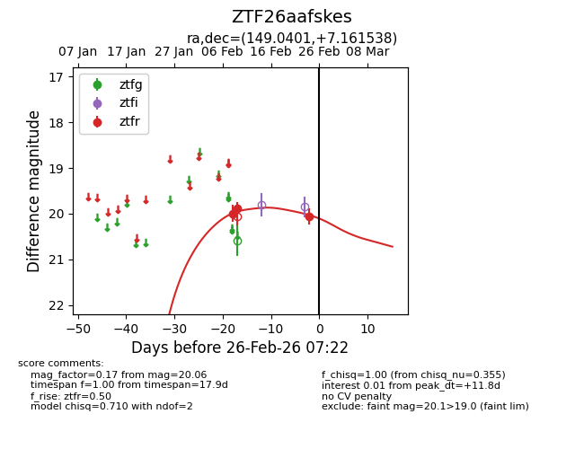
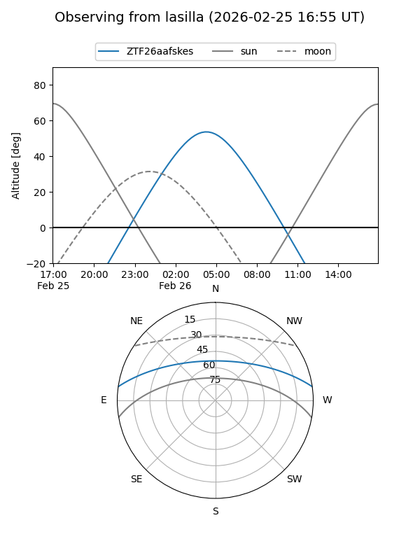
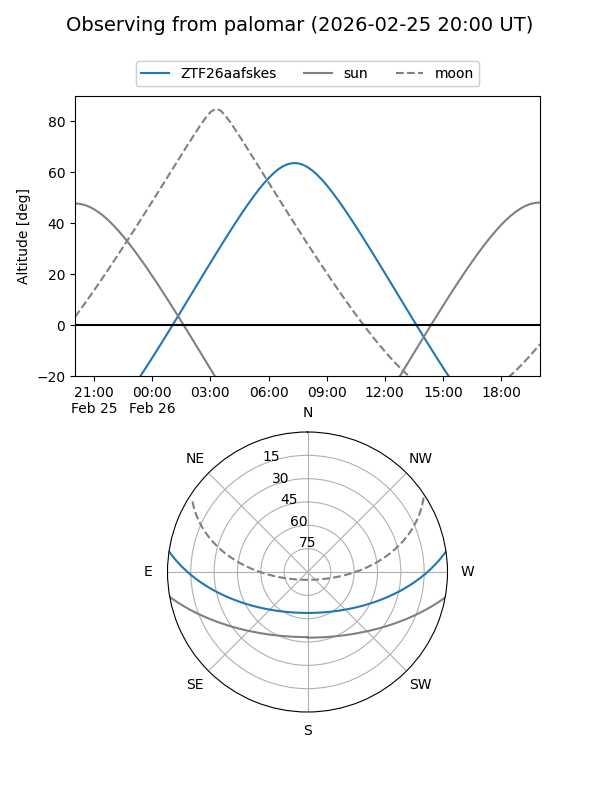
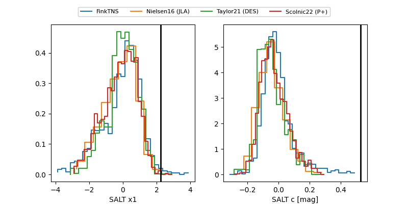

ZTF26aafskes
Target ZTF26aafskes at 2026-02-26 07:23
Aliases and brokers:
FINK: link
Lasair: link
ALeRCE: link
alt names
ZTF26aafskes (ztf,fink_ztf)
Coordinates:
equatorial (ra, dec) = 149.0401,+7.16154
equatorial (HMS+DMS) = 09:56:09.62,+07:09:41.54
galactic (l, b) = (230.3469,+43.94646)
Flags:
Photometry:
last ztfr=20.06
3 ztfr detections
Lightcurve

Visibility


Additional plots
